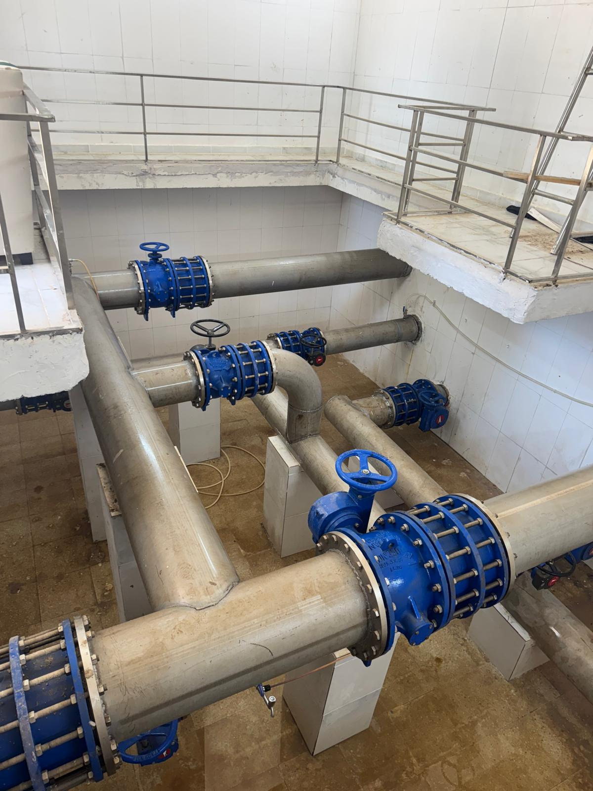
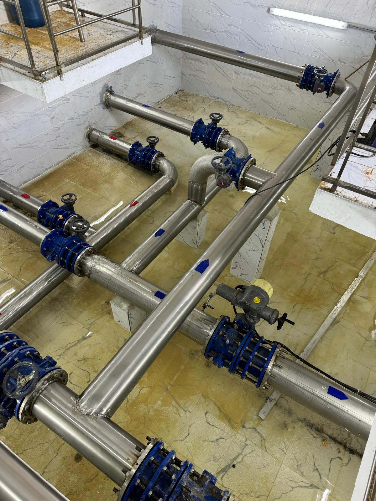
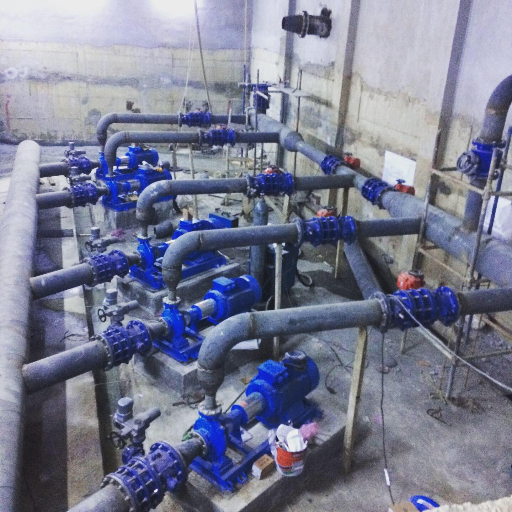

İçme suyu altyapı projesi kapsamında, Hatay/Hassa bölgesinde gerçekleştirilen çalışmalar, suyun güvenli ve temiz bir şekilde dağıtılmasını sağlamak amacıyla titizlikle yürütülmüştür. Proje süresince kullanılan malzemeler, dayanıklılık ve hijyen standartlarına uygun olarak seçilmiş olup, teslim süreci 3 ay içerisinde tamamlanmıştır.

Isparta Gelendost bölgesinde gerçekleştirilen İçme Suyu Altyapı Projesi, bölge halkının güvenli ve temiz bir şekilde suya erişebilmesini sağlamak amacıyla başlatılmıştır. Proje süresince kullanılan malzemeler, dayanıklılık ve hijyen standartlarına uygun olarak seçilmiş olup, teslim süreci 2 ay içerisinde tamamlanmıştır.

Gaziantep/Islahiye bölgesinde gerçekleştirilen Terfi Merkezi Projesi, bölge halkının güvenli ve temiz bir şekilde suya erişebilmesini sağlamak amacıyla başlatılmıştır. Proje süresince kullanılan malzemeler, dayanıklılık ve hijyen standartlarına uygun olarak seçilmiş olup, teslim süreci 2 ay içerisinde tamamlanmıştır.